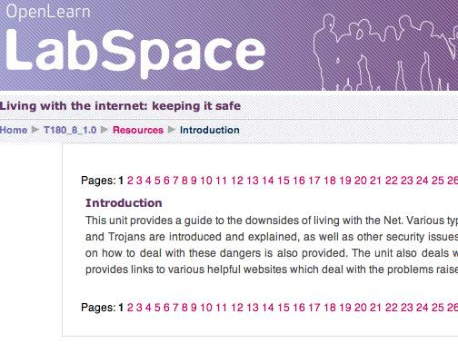

One of the problems I have with the way Moodle is being used for LabSpace/OpenLearn is the truly horrible navigation scheme that has been adopted within a unit:

which I tried to improve upon using a variety of OPML widgets and an OPML links file structured according to sections within a unit using Optimal OpenLearn navigation, for example.
The arbitrary naming scheme applied to URLs further complicates matters - course index pages take the form http://labspace.open.ac.uk/course/view.php?id=1977 and course resource pages the form http://labspace.open.ac.uk/mod/resource/view.php?id=44145.
The id numbers are arbitrary, and for course resources not necessarily consecutive.
One request I've had relating to feedcycled/RSSified versions of LabSpace courses is for item level links back to the original page. With no programmatic access to resource IDs, and no sensible URL naming scheme for resources, I saw this as being 'nice, but...'
However, it struck me that the horrible list of page links shown in the screenshot above could be easily scraped and used to see a simple database/array that could return the URL for the n'th page in a unit (cf. the n'th item in a feed).
So here's a demo - it only works for T180_8 at the moment:
- Course index page: http://ouseful.open.ac.uk/openlearnplayground/labspaceURL.php?cid=T180_8
- Unit resource page: http://ouseful.open.ac.uk/openlearnplayground/labspaceURL.php?cid=T180_8&item=4
- All resource pages for a unit: http://ouseful.open.ac.uk/openlearnplayground/labspaceURL.php?cid=T180_8&item=all
The service root is at: http://ouseful.open.ac.uk/openlearnplayground/labspaceURL.php
The service arguments are: cid - course identifier; item - the number of the resource item required (all returns a list of all the resources, omitting the argument (or setting it to 0) returns the URL for the course index page).
I will probably XMLify this service and produce an HTML link output at some point...
When I get a chance, I'll revamp the openlearn2rss stylesheet to add these links in as item links; (which means I should then regenerate all the courses I did yesterday - sigh...)
PS I've just added another switch to the URL, the optional &op=redirect. Using this switch will redirect to the appropriate LabSpace page. For example:
- Course index page: http://ouseful.open.ac.uk/openlearnplayground/labspaceURL.php?cid=T180_8&op=redirect
- Unit resource page: http://ouseful.open.ac.uk/openlearnplayground/labspaceURL.php?cid=T180_8&item=4&op=redirect